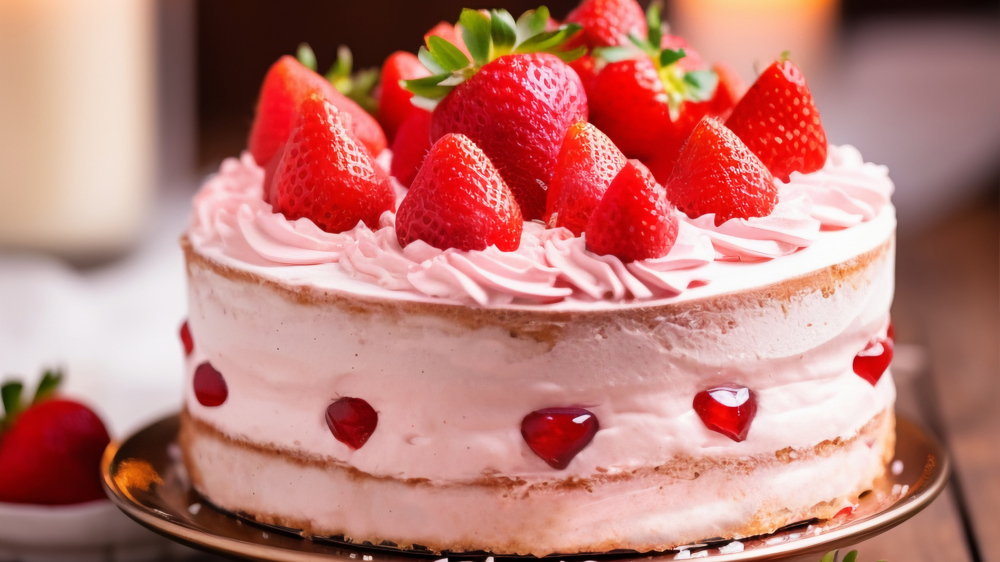

Recette
Le gâteau à la Fraise
« Une recette irrésistible, spécialement conçue pour les amoureux de la douceur fruitée de la fraise »

Difficulté
Facile
Préparation
25 min
Cuisson
30 min
Temps total
55 min
INGRÉDIENTS
- Fraise : 14 unités
- Beurre : 200 g
- Sucre : 150 g
- Farine : 50 g
- Œufs : 3
PRÉPARATION
- Faire fondre le beurre.
- Mélanger le sucre, les œufs et la farine.
- Verser la pâte dans un moule beurré.
- Cuire au four à 180°C pendant 30 minutes.
- Ajouter la fraise sur le gateau